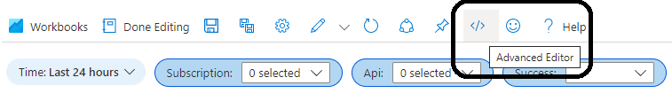

Deploy Azure Workbook and App Insights Function

In my previous blog post Azure Workbook Tips & Tricks we created an Azure Workbook to gain more insight into the use of our APIs hosted in Azure API Management. In this blog post I’ll show you how to deploy this workbook with Bicep and set environment specific variables. I’ll also show how to deploy a shared kusto function in Application Insights with the Azure CLI.
- Deploy workbook based on ARM template
- Load workbook from file
- Define workbook as Bicep object
- Deploy shared function in App Insights
- Conclusion
Deploy workbook based on ARM template
After you’ve created your workbook, you can download an ARM Template of the workbook, which you can then convert to a Bicep script. To do this, open the workbook in Edit mode and click the Advanced Editor button.

Choose ARM Template as the Template Type and download the template. The result will look like sample-arm-template.json.
The ARM template can be decompiled to a Bicep script with the following Azure CLI command.
az bicep decompile --file .\sample-arm-template.json
The result will be a Bicep file like the snippet below. See sample-after-decompile.bicep for the full script.
@description('The friendly name for the workbook that is used in the Gallery or Saved List. This name must be unique within a resource group.')
param workbookDisplayName string = 'API Management Requests'
@description('The gallery that the workbook will been shown under. Supported values include workbook, tsg, etc. Usually, this is \'workbook\'')
param workbookType string = 'workbook'
@description('The id of resource instance to which the workbook will be associated')
param workbookSourceId string = '/subscriptions/00000000-0000-0000-0000-000000000000/resourceGroups/my-test/providers/microsoft.insights/components/appin-robo-test'
@description('The unique guid for this workbook instance')
param workbookId string = newGuid()
resource workbookId_resource 'microsoft.insights/workbooks@2021-03-08' = {
name: workbookId
location: resourceGroup().location
kind: 'shared'
properties: {
displayName: workbookDisplayName
serializedData: '{"version":"Notebook/1.0","items":[{"type":9,"content":{"version":.....<long string>.....'
version: '1.0'
sourceId: workbookSourceId
category: workbookType
}
dependsOn: []
}
output workbookId string = workbookId_resource.id
The workbook content is set through the serializedData property. This is one long string that contains the entire workbook definition. Including hardcoded environment specific values, like the application insights resource id (at the end of the string).
To make it deployable to multiple environments, we can replace the hardcoded application insights id with the workbookSourceId parameter. See the example below.
... "fallbackResourceIds":["${workbookSourceId}"] ...
We can now deploy the workbook using the following Azure CLI command.
$resourceGroupName = '<resource group>'
$applicationInsightsId = '<application insights id>'
az deployment group create `
--name 'sample-workbook-deployment' `
--resource-group $resourceGroupName `
--template-file './sample.bicep' `
--parameters workbookSourceId=$applicationInsightsId `
--verbose
NOTE: when you open the deployed workbook in the Azure Portal, you might get the error
Failed to resolve table or column expression named 'ApimRequests'because we haven’t deployed theApimRequestsfunction yet.
If you run this command multiple times, it will fail with the error A Workbook with the same name already exists within this subscription. The workbook id is different with every deployment, while the display name stays the same. You can fix this by generating a GUID based on a string that is the same for each deployment. See the example below.
param workbookId string = guid('sample-workbook')
A working sample with these changes can be found here.
The biggest downside of this solution is that the entire workbook definition is a serialized string on a single line. This makes it difficult to make minor changes directly in the definition or to see what has changed. To solve this problem, we can load the workbook definition from a separate file.
Load workbook from file
The first step is to download the workbook definition. Open the workbook in Edit mode and click the Advanced Editor button.
Choose Gallery Template as the Template Type and download the template. The result will be a JSON file containing only the definition of the workbook. It should look like sample.workbook.
We can’t replace the application insights id with the workbookSourceId parameter like we did before, so I’ve replaced the value inside sample.workbook with a placeholder. You can do this for every environment specific value. See the example below.
"fallbackResourceIds": [
"##applicationInsightsId##"
],
Using the bicep script from the previous example as a starting point, we can now load the workbook definition from the file and replace the ##applicationInsightsId## placeholder. See the snippet below.
var definition = loadTextContent('./sample.workbook')
var serializedData = replace(definition, '##applicationInsightsId##', workbookSourceId)
resource workbookId_resource 'microsoft.insights/workbooks@2021-03-08' = {
...
properties: {
serializedData: serializedData
...
}
}
As you can see, the definition is loaded from the file using the loadTextContent function. We then use the replace function to replace the placeholder. The last step is to set the serializedData property. See sample.bicep for the full sample.
Using the same Azure CLI command as before, we can deploy the workbook using Bicep.
$resourceGroupName = '<resource group>'
$applicationInsightsId = '<application insights id>'
az deployment group create `
--name 'sample-workbook-deployment' `
--resource-group $resourceGroupName `
--template-file './sample.bicep' `
--parameters workbookSourceId=$applicationInsightsId `
--verbose
NOTE: when you open the deployed workbook in the Azure Portal, you might get the error
Failed to resolve table or column expression named 'ApimRequests'because we haven’t deployed theApimRequestsfunction yet.
Define workbook as Bicep object
I have explored another option to deploy a workbook. You can use a Bicep object for the workbook definition and place it directly in the Bicep script. The first version of this blog post was based on this solution.
I’ve found this solution to be to error prone though. Over the past weeks I encountered numerous issues with the generated Bicep and had to update the conversion script accordingly.
I find that loading the workbook definition from a JSON file and doing a simple string replace on the placeholders is an easier way to deploy. It’s less error prone and simpler to explain to other people.
So, I would not recommend this solution given the disadvantages. If you’re still interested, see this README.
Deploy shared function in App Insights
The last step is to deploy the shared function that the workbook uses to query the API Management requests.
I’ve stored the following kusto query in a file called ApimRequests.kql. The environment specific API Management name has been replaced by the placeholder ##apimName##.
requests
| where customDimensions["Service ID"] == "##apimName##"
| extend subscription = tostring(customDimensions["Subscription Name"])
, api = tostring(customDimensions["API Name"])
, sessionCorrelationId = tostring(customDimensions["Request-Session-Correlation-Id"])
I thought I could use a similar approach as with the workbook and use the analyticsItems Bicep resource, but unfortunately this doesn’t work at all. The problem has been reported on GitHub in this issue.
The Azure CLI doesn’t provide any specific commands either. The only option seems to be to use the REST API. There is no page about creating an Application Insights function in the REST API documentation, but luckily I found this blog post that describes the various operations.
The following PUT can be used to create a function.
PUT https://management.azure.com/subscriptions/{subscriptionId}/resourceGroups/{resourceGroup}/providers/Microsoft.Insights/components/{applicationName}/analyticsItems/item?api-version=2015-05-01
{
"scope": "shared",
"type": "function",
"name": "myFunction",
"content": "requests | order by timestamp desc",
"properties": {
"functionAlias": "myFunction"
}
}
When you execute it a second time, you’ll get the following error though: A function with the same name already exists (ID: '...'). I’ve tried several variations, but there doesn’t seem to be a way to update an existing function. As a workaround, I first delete any existing function with the specified name before adding it again.
Below is an extract of the PowerShell script I’ve created. It uses the az rest command to call the REST API.
$content = Get-Content -Path $FunctionFilePath
$content = $content -Replace """", "\""" # Escape " in the query
foreach ($key in $Placeholders.Keys)
{
$content = $content -Replace "##$key##", $Placeholders[$key]
}
$functions = az rest --method get --url "https://management.azure.com/subscriptions/$SubscriptionId/resourceGroups/$ResourceGroup/providers/Microsoft.Insights/components/$AppInsightsName/analyticsItems?api-version=2015-05-01"
$function = $functions | ConvertFrom-Json | Where-Object -Property "name" -Value $FunctionName -EQ
if ($null -ne $function)
{
az rest --method "DELETE" --url """https://management.azure.com/subscriptions/$SubscriptionId/resourceGroups/$ResourceGroup/providers/Microsoft.Insights/components/$AppInsightsName/analyticsItems/item?api-version=2015-05-01&includeContent=true&scope=shared&type=function&name=$FunctionName"""
}
$requestBodyPath = Join-Path $env:TEMP "create-shared-function-request-body.json"
Set-Content -Path $requestBodyPath -Value @"
{
"scope": "shared",
"type": "function",
"name": "$FunctionName",
"content": "$content",
"properties": {
"functionAlias": "$FunctionName"
}
}
"@
az rest --method "PUT" --url "https://management.azure.com/subscriptions/$SubscriptionId/resourceGroups/$ResourceGroup/providers/Microsoft.Insights/components/$AppInsightsName/analyticsItems/item?api-version=2015-05-01" --headers "Content-Type=application/json" --body "@$requestBodyPath"
As you can see. The first step is to load the file with the function query and escape any " in the query. We then replace each placeholder with the environment specific value.
Step two is to query the existing functions and check if a function with the same name already exists. If it does, we remove it.
The last step is to (re)create the function. We first create a JSON file with the request body and then use the az rest command to execute the request.
You can find a full working parameterized script here. It can be executed with the following command.
$placeholders = @{
"apimName" = "<api management name>";
}
.\deploy-shared-function.ps1 -SubscriptionId "<subscription id>" `
-ResourceGroup "<resource group with app insights>" `
-AppInsightsName "<app insights name>" `
-FunctionName "ApimRequests" `
-FunctionFilePath ".\ApimRequests.kql" `
-Placeholders $placeholders
Conclusion
Deploying an Azure Workbook is fairly straightforward. Placing the workbook JSON in a separate file is a nice improvement that makes it easier to make small changes directly in the definition. It also makes it easier to see what has changed.
Deploying a shared function in Application Insights is poorly supported, however. Using Bicep seems to be a no go at the moment. An alternative is to use the REST API. Hopefully the support will improve in the future.
If you know a better or more elegant way to deploy a shared function. Hit me up on Twitter or LinkedIn.